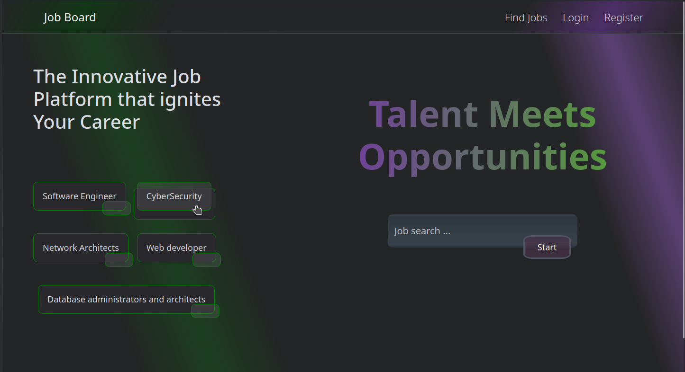
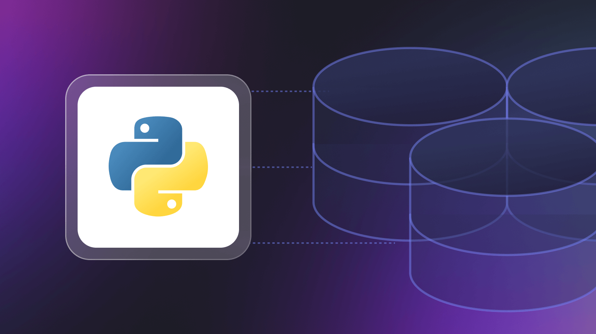

Projects



FullStack JobBoard
Developed a fullstack JobBoard Website using Java for the backend and React for the frontend. The platform allows users to search for jobs, apply, and post listings.

Python TKInter UI
Developed a python application for managing a dataset backend, implementing CRUD functionlaities. The app uses TKinter for a simple user interface and stores data in CSV files for easy management.

Color Mixer AWS-Color
Created a color mixer project using AWS-Color package, allowing users to blend colors and generate shades. The project utilizes SOLID programming principles to ensure clean, maintainable and scalable code.